下载 zip 后解压，按课程里的 Agent 框架路径继续完成本节实操作业。
第 1 幕 · Agent Framework
什么是 Agent？
今天你用的 GPT、Gemini、Deepseek、豆包，本质上都是同一种东西——你打一行字，它回一段话，然后就轮到你了。它再聪明，也只是在对话框里给你文字。想真正完成一件事（订票、填表、发邮件、查数据后做决策），全靠你自己一步步去操作。
-
01
和主流聊天 AI（GPT/Gemini/Deepseek/豆包等）对比
今天你用的 GPT、Gemini、Deepseek、豆包，本质上都是同一种东西——你打一行字，它回一段话，然后就轮到你了。它再聪明，也只是在对话框里给你文字。想真正完成一件事（订票、填表、发邮件、查数据后做决策），全靠你自己一步步去操作。
Agent 的革命性在于三个能力的叠加：
第一，它能自己拆任务。你说"帮我准备下周一的周会 PPT"，它会自动想到：先看上周的会议纪要、再查本周的项目进度、然后按模板生成幻灯片。你不需要一步步教它。
第二，它有"手脚"——也就是能调用工具。Chat AI 只能"说"，Agent 能"做"：搜网页、读文件、写代码、调 API、发消息。就好比顾问只能口头建议，而助理能真的去帮你打电话、跑腿、填表。
第三，它会自我检查和循环。做完一步，它会看看结果对不对，不对就换个方法重试，直到目标达成。这个"目标驱动 + 循环执行"的模式，是 Agent 跟 Chat AI 最本质的区别。
一个简单的判断标准：如果 AI 做完之后你还要亲自动手，那就是 Chat AI；如果它交给你的已经是最终结果，那就是 Agent。
-
02
用微信举例
-
03
差异存在的原因
"在云端，只负责对话" 说的是 Chat AI 的本质限制。GPT / Gemini / 豆包这些产品，背后的大模型住在远程服务器上，跟你之间只有一根"文字管道"：你发文字进去，它吐文字出来，一轮结束。它没有硬盘、没有桌面、没有浏览器，什么都摸不到。你让它"帮我把这段话存成 Word"，它只能告诉你怎么操作——它自己做不到，因为它根本没有地方放那个文件。
"有文件系统，可以操作执行" 说的是 Agent 多出来的那一层。想象给那个云端大脑接上了三样东西：
第一是一张办公桌（文件系统）。Agent 有自己的工作目录，能创建文件、读取你上传的文档、生成 PPT 再交给你下载。Chat AI 的回答消失在聊天记录里，Agent 的成果是实实在在的文件。
第二是一双手（工具调用 + 代码执行）。它能跑 Python 脚本算数据、能调搜索引擎查信息、能通过 API 帮你发邮件或操作日历。这就是"执行"的含义——不是告诉你怎么做，而是它替你做了。
第三是一颗主动的心（自主循环）。Chat AI 是"你推一下动一下"，而 Agent 会自己制定计划、一步步执行、遇到问题自己调整，直到任务完成才停下来。
所以最核心的一句话：Chat AI 和 Agent 用的是同一个大脑，区别在于 Agent 多了一个身体。 大脑负责思考和语言，身体负责接触真实世界——读文件、写代码、调工具、完成任务。
-
04
法律顾问和代理律师
顾问和律师的脑子一样好，那为什么律师能帮你打赢官司、顾问只能给建议？
因为律师有律所啊——有办公桌能写材料、有电话能联系法院、有一套办案流程能自己推进到底。顾问呢？就一张嘴。
AI 也一模一样。ChatGPT 们就是那个只有嘴的顾问——聪明，但聊完就没了。
Agent 多了三样东西：一个能存文件的工作空间、一堆能操作外部世界的工具、还有一套让它自己拆任务、盯进度、做到底的工作流程。
-
05
Chat AI 处理文件和 Agent 处理文件的区别
隔离 vs 延续。
Chat AI 的每次对话就是一间密封的小房间——你把文件从门缝塞进去，它看了生成一段文字回你，然后这间房间就永远锁上了。下次你开一间新房间，里面什么都没有，你得重新上传文件、重新交代背景，它对你之前做过什么一无所知。
Agent 是一间始终敞开的办公室。你上传的文件、它生成的文件，全都放在同一张桌子上。下次你走进来说"帮我写周报"，它自己先翻一遍桌上的需求文档、竞品分析、会议纪要，理解完背景再动手。你不用说"我们这个项目是做什么的"——文件都在那里，它自己会看。
第 2 幕 · Agent Framework
使用 Agent 的核心条件
文件空间给大脑"喂"信息 → 大脑读完之后做出判断和规划 → 大脑把计划交给框架去执行 → 框架调用工具、跑代码、一步步推进 → 执行结果写回文件空间 → 大脑再读取结果决定下一步 → 如此循环，直到任务完成。
-
06
三个条件：AI 模型、Agent 框架、文件空间
文件空间给大脑"喂"信息 → 大脑读完之后做出判断和规划 → 大脑把计划交给框架去执行 → 框架调用工具、跑代码、一步步推进 → 执行结果写回文件空间 → 大脑再读取结果决定下一步 → 如此循环，直到任务完成。
三者缺一不可，但短板效应不同：大脑弱，Agent 做出来的东西质量差；框架弱，Agent 跑到一半就散架；资料空，Agent 再强也是无米之炊。讲给小白听的时候，"特种兵 vs 普通市民"这个点最容易出记忆——同一个脑子，差的是训练和装备。
-
07
AI 模型
第一梯队（$5+ / 百万 token）三家争霸：Claude Opus 4.7 在 SWE-bench Verified 上以 87.6% 领先，且在 LMSYS Arena thinking 模式排名第一。GPT-5.5 是 OpenAI 自 GPT-4.5 以来首个完全重新训练的基座模型，原生多模态，专为 Agent 多工具编排设计。Gemini 3.1 Pro 凭借 2M 上下文窗口和 $2/$12 定价，在推理基准上紧追前两名，性价比显著更高。 DEV Community + 2
性价比 在 $3/$15 这个区间：Claude Sonnet 4.6 和 GPT-5.4 是多数开发者的日常主力。大多数 Cursor 和 Claude Code 用户以 Sonnet 4.6 为日常驱动，遇到难题才切 Opus。 DEV Community
开源颠覆者 是 DeepSeek：V3.2 以 MIT 许可 + $0.28 输入定价打破了价格底线，迫使所有竞争者重新考虑定价策略。V4 Pro 更是把 SWE-bench 做到了 80.6%，逼近闭源第一梯队。 Awesome Agents
最重要的一句话：你选哪个模型仍然重要，但不如 12 个月前那么重要了。顶部差距已经非常小，工作流程设计、提示词工程和集成质量对产出质量的影响，已经超过了模型本身的差异。回到我们前面的框架——Agent 三件套里，模型（大脑）的差距在缩小，框架（身体）和文件空间（资料）的重要性在上升。 Build Fast with AI
-
08
Agent 框架
Claude Code vs Codex 是"质量 vs 效率"之争。 一个有记录的 Express.js 重构任务，Codex 花了约 $15，Claude Code 花了约 $155，但盲审评审认为 Claude Code 产出的代码质量更高（67% vs 25%）。一项 500+ 开发者的 Reddit 调查中，65% 日常偏好 Codex，但 VS Code 用户中 46% 最爱 Claude Code。实际上多数专业开发者两个都用——Codex 跑量，Claude Code 做关键提交。 CatdoesSupalaunch
OpenClaw vs Hermes 是"生态广度 vs 学习深度"之争。 从架构上看，两者走的是几乎相反的路径：前者强调连接能力的广度，后者则更执着于学习能力的深度。OpenClaw 有 354k Stars 和 13,700+ 技能，但记忆脆弱、不会自学。Hermes 是目前唯一内置学习闭环的框架，但生态还在早期。有用户分享了一个有意思的用法：用 Hermes 当"指挥位"，OpenClaw 当"执行位"。 GeekParkCSDN
中国厂商基本都基于 OpenClaw 做差异化。 最值得关注的是腾讯 QClaw（微信直连，社交入口独一份）、字节 ArkClaw（飞书企业级最成熟）、和 MiniMax MaxClaw（小白友好度最高）。选型逻辑很简单：你的团队用飞书就选 ArkClaw/Coze，用微信就选 QClaw，要隐私就选 AutoClaw，要中文办公自动化就选龙虾。
回到我们的"三件套"框架：Claude Code / Codex 本质上是"大脑 + 身体"的紧密绑定（模型 + 框架一体化），而 OpenClaw / Hermes 是"只提供身体"的通用框架，你可以自选大脑。中国厂商则是在通用框架上加了"本地化的办公桌和工具"——飞书、微信、钉钉这些是中国特有的文件空间和工具生态。
-
09
文件空间
本地 = 文件在你电脑上，Agent 来你家办公；云端 = 文件在远程服务器上，Agent 在别人的办公室干活，做完把成果送回来。
两者最核心的取舍是隐私 vs 隔离。本地模式数据不出你的电脑，适合敏感文件和需要实时感知变化的场景；云端模式在一个一次性的隔离容器里运行，Agent 做什么都不影响你的真实环境，但代价是你的文件得上传到别人的服务器。
实际使用中不是二选一。比如 Codex 默认本地执行日常任务，遇到要跨多个仓库并行处理的大活，切到
codex cloud exec走云端。Claude Code 始终本地，靠 Git 来保底回滚。中国厂商（ArkClaw、KimiClaw、MaxClaw）基本都是云端——降低门槛、开箱即用，但也意味着你的数据经过了他们的服务器。 -
10
操作的区别
-
11
界面差异
五种界面，从"最像日常软件"到"最技术"排列：
本地 App（Codex 桌面版 / Claude Code IDE 集成）——最直观的方式。像用 Word 一样装在电脑上，左边文件树、中间实时预览 Agent 改了哪些代码、右边聊天。你能看到每一行变化，确认没问题再提交。适合需要精细控制的开发者。
本地终端——同样在你电脑上跑，但界面是纯文字命令行。没有文件树、没有 diff 预览，打字最快、消耗最少。本地 App 和本地终端的本质一样：Agent 在你电脑上，文件在你电脑上，只能在这台电脑前操作。
SSH 远程——看起来跟本地终端一模一样，但你操控的是远程服务器。容易让人混淆的点就在这里：界面相同，但"东西在哪"完全不同。
IM 聊天——小白最友好。不需要装任何东西，在已有的飞书 / Telegram / 微信里直接跟 Agent 发消息。代价是你看不到 Agent 的工作过程，只能等它把结果发回来。
网页界面——折中方案。打开浏览器就能用，既能管理文件又能对话，适合团队多人共享同一个项目空间。
本地两种（App + 终端）的共同特点：Agent 和文件都在你这台机器上，快、私密、但只能在这台电脑前用。云端三种（SSH + IM + 网页）的共同特点：Agent 和文件在远程服务器上，你用任何设备通过网络连过去，灵活但依赖网络。
第 3 幕 · Agent Framework
选择适合你的 Agent 框架
天梯逻辑从上到下：
-
12
从夯到拉
天梯逻辑从上到下：
夯：框架最强 + 模型最强，但被锁死在自家生态里。Claude Code 只能用 Claude，Codex 只能用 GPT。你得有对应的账号和订阅，而且模型费用不便宜。但论 Agent 完成度，这两个目前就是天花板。
顶级：聪明人的玩法——用 Claude Code 这套最强框架，但把模型偷换成便宜的第三方（DeepSeek 等）。Trae 本质上也是这个思路。框架能力不打折，模型费用大幅降低，灵活度拉满。
人上人：Hermes Agent 和 Trae Solo 都走“更强 Agent 工作台”路线。Hermes 不绑任何模型、自学习、越用越聪明；Trae Solo 把编辑器、终端、浏览器、文档和工具收进同一个可视化 workspace。理念超前，但生态还在早期，需要耐心养一段时间才能见效。
NPC：OpenClaw + 国内云厂商的打包方案，再加上 WorkBuddy 这种面向办公场景的桌面工作台。门槛最低（飞书扫码就能用、微信直连就能操控），适合小白快速上手。但框架本身不绑定强模型、没有自学习、框架问题频出，能力天花板有限。
拉：就是现在大家每天用的 ChatGPT、Gemini、豆包、Kimi 这些——纯聊天 AI。回到我们最开始的比喻：只有大脑没有身体的法律顾问。有用，但不是 Agent。
-
13
选择路径
- 有海外账号 → （Claude Code + Codex，写代码办公都是最强）
- 没有但想用最好的，没多端设备需求 →（Trae + CC Switch，同级框架换便宜模型）
- 多端设备 + 能上云 → 按你用的办公工具选（飞书→ArkClaw、微信→QClaw、个人→看你愿不愿意养 Hermes）
- 多端设备 + 必须本地 → 按命令行接受度选（能→Hermes 本地、不能→AutoClaw）
- 以上都不想碰 → 继续用 Chat AI
第 4 幕 · Agent Framework
快速开始
个概念，底部一条链路串起来：注册账号 → 在平台付费 → 拿到 API Key → 填入 Agent 框架 → 框架调用模型 → 消耗 token → 扣你的钱。
-
14
理解这些概念
9 个概念，底部一条链路串起来：注册账号 → 在平台付费 → 拿到 API Key → 填入 Agent 框架 → 框架调用模型 → 消耗 token → 扣你的钱。
API Key = 银行卡密码，这个一定要强调。小白最容易犯的错误就是把 API Key 发在群里或者贴到公开文档上——别人拿到就能花你的钱。
Token = 电费的"度"，订阅 = 包月不限量（有上限），API = 按度计费。Agent 框架跑起来特别费 token（一个复杂任务可能消耗几万 token），所以用 API 计费的时候要留意账单。
-
15
Codex
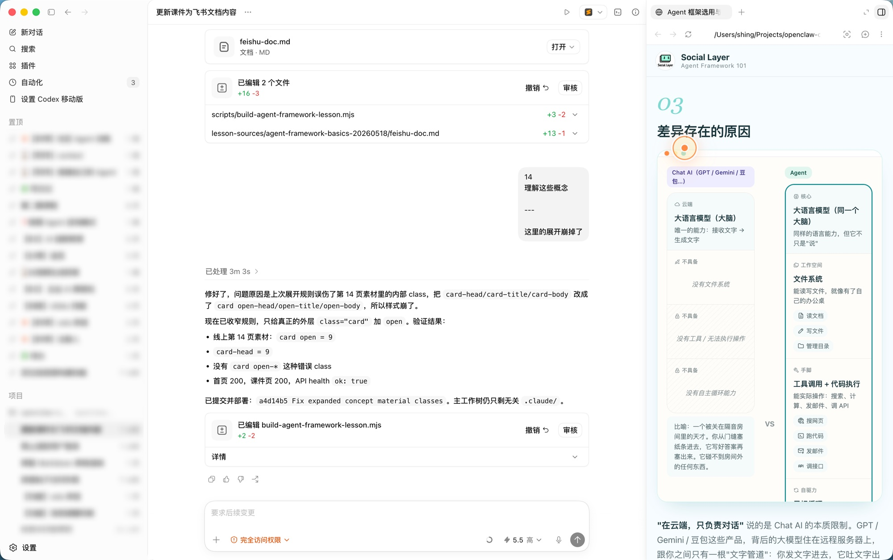
-
16
Claude code
- 科学上网
- 订阅账号：https://claude.com/pricing
- 安装应用：https://claude.com/product/claude-code
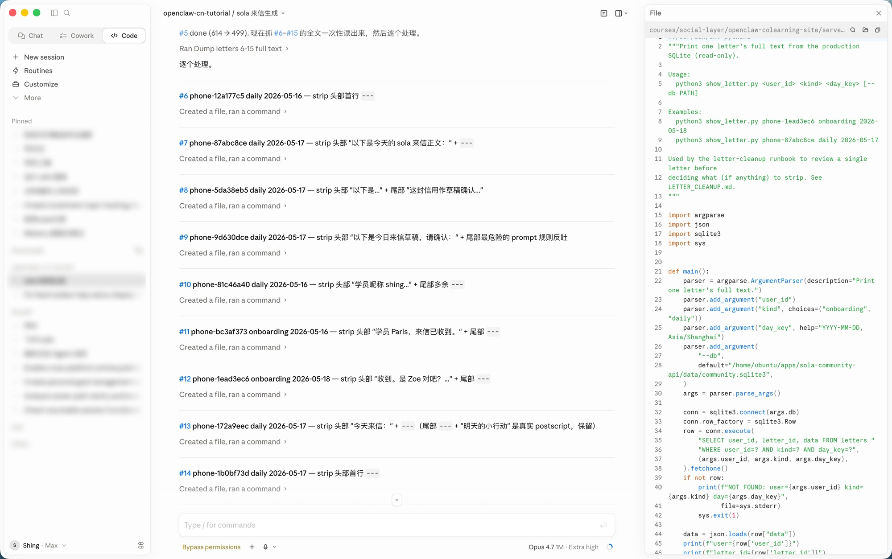
-
17
Trae + cc swtich
- 安装 Trae：https://www.trae.ai/
- 跟 Agent 说“帮我安装claude code，再安装cc switch”，确保可以访问互联网，坐等结果就行了。
- （也可以选择其他家模型的方案！）https://platform.deepseek.com/ 注册一个deepseek的api。然后让它帮你接入。就可以使用了。
- 安装 claude code 插件，直接在 Trae 里使用
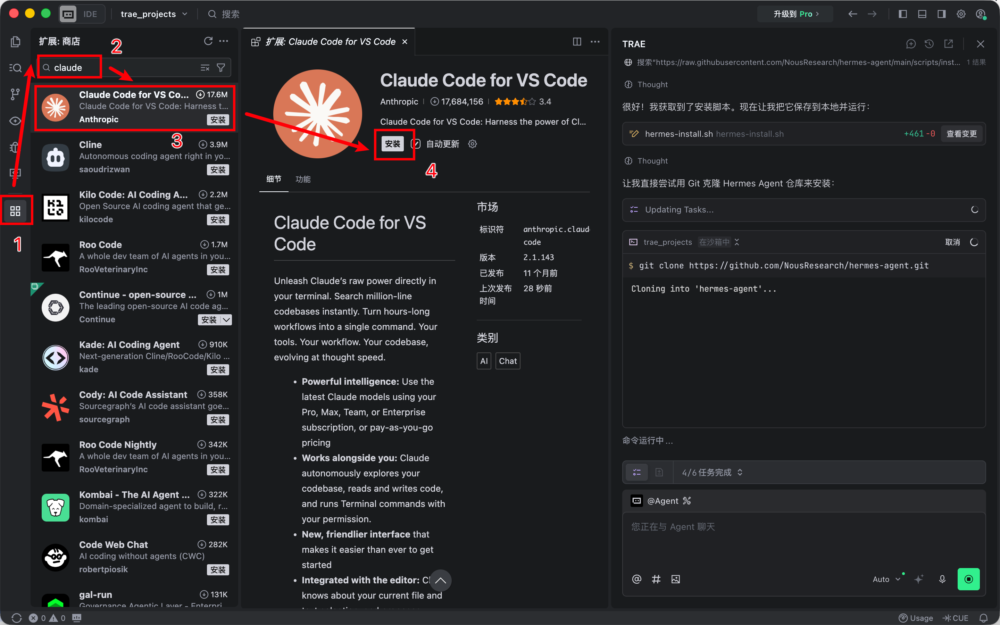
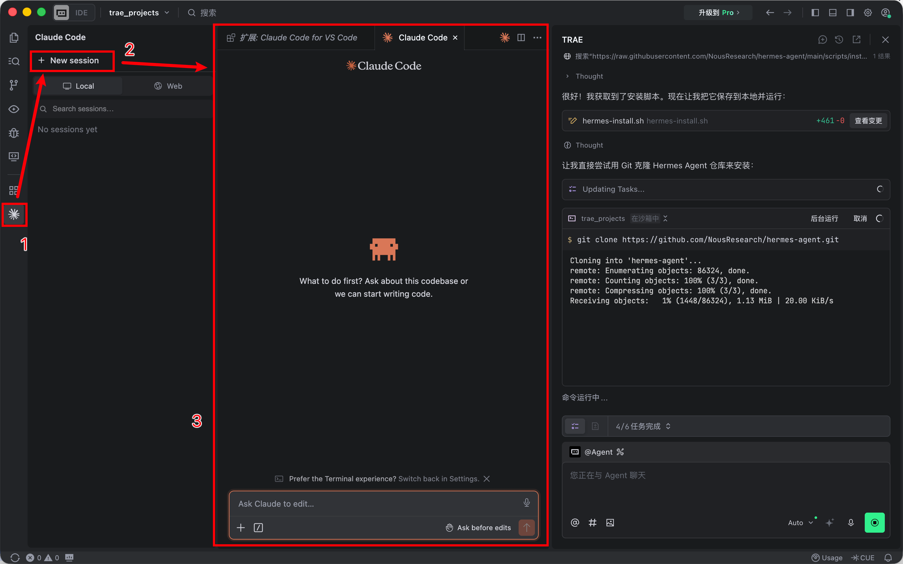
-
18
Hermes Agent
- 让 Trae 帮你安装
- 跟 Agent 说“帮我安装Hermes Agent，再安装cc switch”，确保可以访问互联网，坐等结果就行了。
- （也可以选择其他家模型的方案！）https://platform.deepseek.com/ 注册一个deepseek的api。然后让它帮你接入。就可以使用了。
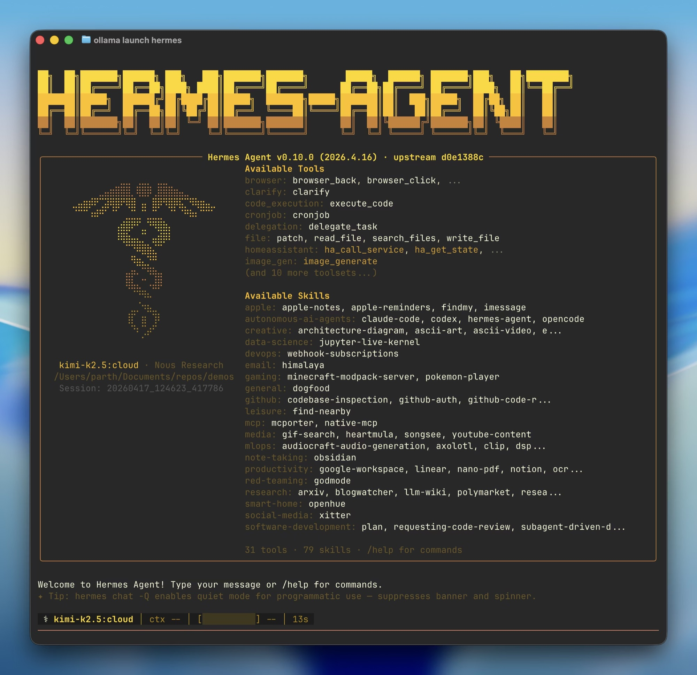
-
19
Openclaw
- 让 Trae 帮你安装
- 跟 Agent 说“帮我安装openclaw，再安装cc switch”，确保可以访问互联网，坐等结果就行了。
- （也可以选择其他家模型的方案！）https://platform.deepseek.com/ 注册一个deepseek的api。然后让它帮你接入。就可以使用了。
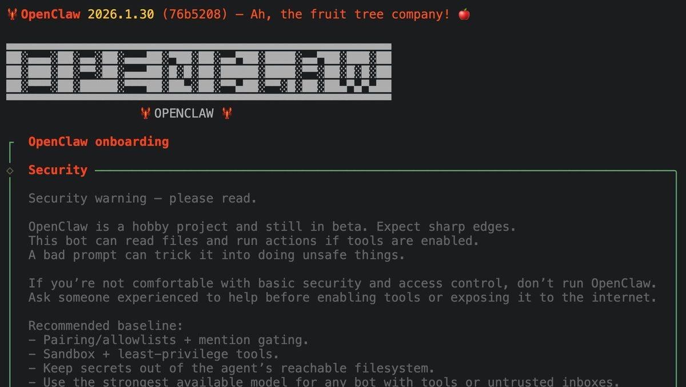
-
20
Trae Solo
- 打开 Trae Solo：https://www.trae.ai/ja/solo
- Solo 是 Trae 的可视化 Agent 工作台，把编辑器、终端、浏览器、文档和工具放进同一个 workspace。
- 适合已经会用 Trae / Trae + CC Switch，想让 Agent 在更完整上下文里推进任务的人。
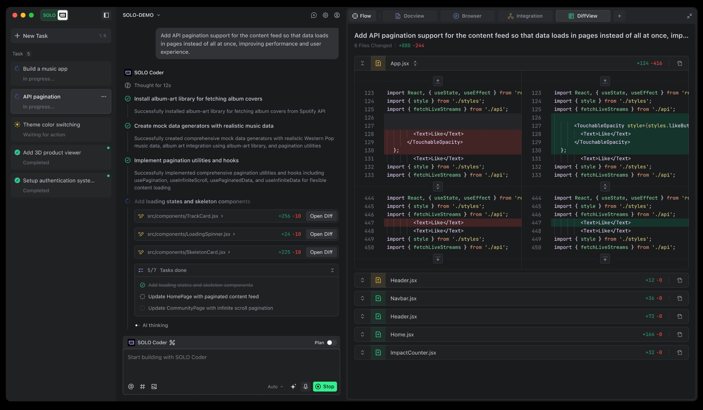
-
21
WorkBuddy
- 打开 WorkBuddy：https://www.codebuddy.cn/docs/workbuddy/Overview
- WorkBuddy 是腾讯 CodeBuddy 的全场景职场 AI 智能体桌面工作台，用一句话描述需求后，让它自主规划并执行任务。
- 适合更偏办公、小白友好、希望用桌面工作台完成文档、表格、PPT、数据分析和本地文件处理的人。
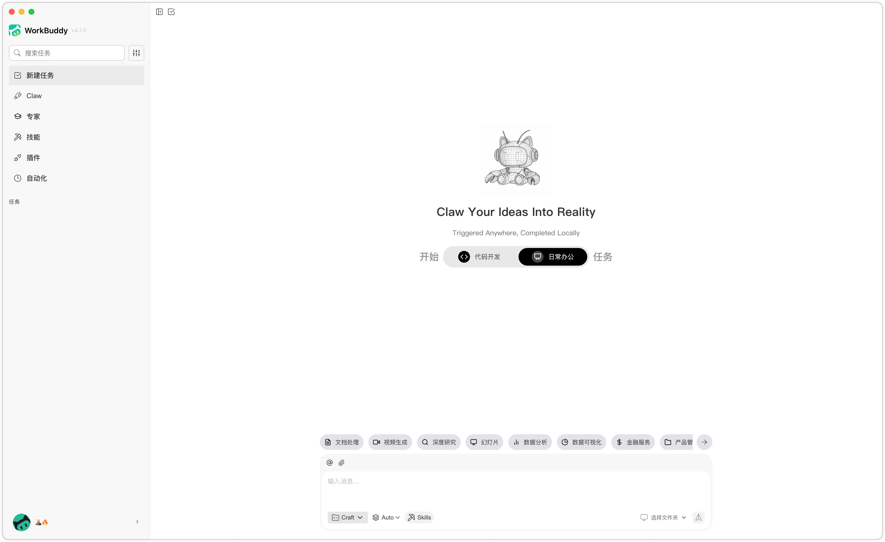
-
22
如何用 Trae 帮你安装这些 Agent 框架
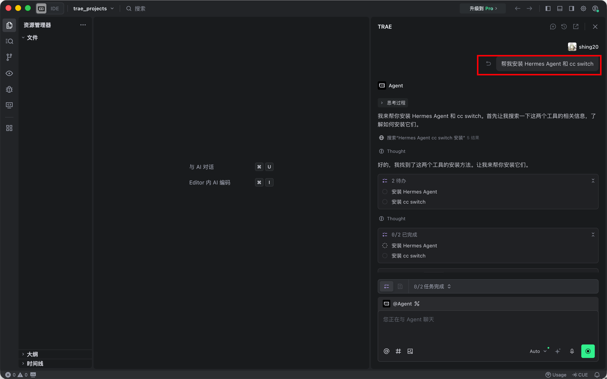
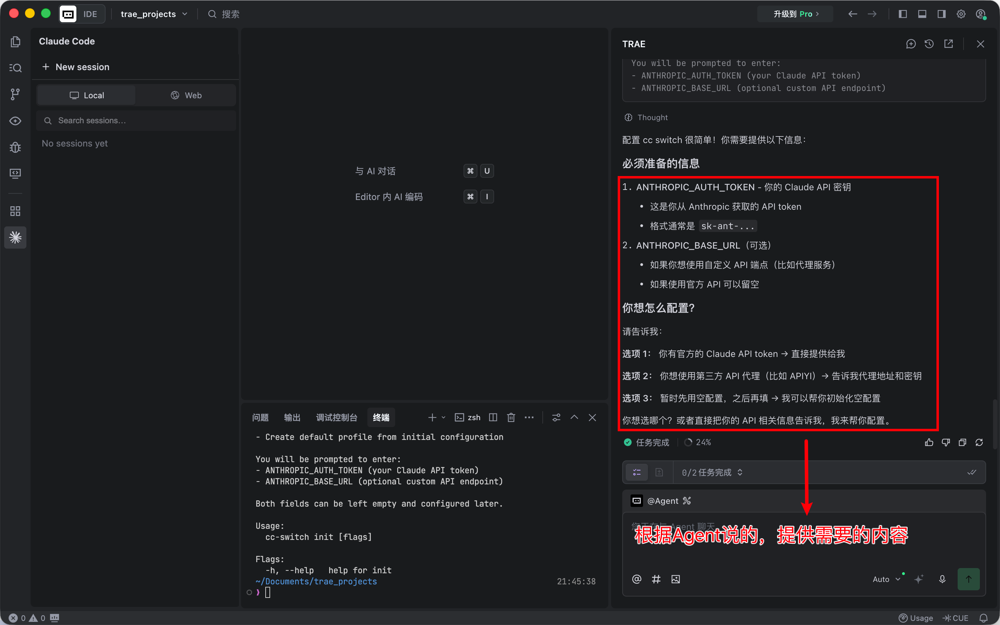
-
23
如何打开终端
Mac 用户按
Command + 空格调出 Spotlight 搜索，Windows 用户按Win键直接打字搜索，Linux 用户Ctrl + Alt + T一键弹出。看到黑底白字（或类似的深色窗口）有个光标在闪，就说明打开成功了。终端就是一个用打字代替点鼠标的工具，你在里面输入的每一行命令，其实跟你在图形界面里"点击菜单→选择操作"是一回事，只是换了种交互方式。
-
24
使用终端小知识
第 1、2 条最重要——密码不可见和 Ctrl+C 中止。几乎每个第一次用终端的人都会在密码输入那里愣住，以为键盘坏了。而 Ctrl+C 是终端里的"万能后悔药"，任何时候不知道发生了什么，按一下就能回到正常状态。
第 3、4 条最省时间——上箭头翻历史和 Tab 自动补全。用了这两个快捷键，终端效率直接翻倍。
第 5、6 条防止误操作——大量文字滚动不要慌（安装日志是正常的），复制粘贴在 Windows 终端里要多按一个 Shift。
第 10 条兜底——实在退不出来，直接关窗口，不会爆炸。
第 5 幕 · Agent Framework
开始一个小项目
开始前的 checklist：
- 装好了 Agent。
- 配好了 API。
- 已经可以开始使用。
如果还没决定好，也完全没有头绪，就参考以下操作：
- 安装 Trae。
- 让 Trae 帮你安装 cc switch 和 Claude Code。
- 去 DeepSeek Platform 注册账号，获取 API Key。
- 把 DeepSeek 的 API Key 发给 Trae，让它帮你配置。
- 在 Trae 上安装 Claude 插件。
可以先看上面的 Trae 图片演示。
-
25
开始一个小任务
我们用一个很小的新媒体周报任务，把前面讲过的 Agent 框架真正跑起来。
先下载作业附件并解压，下一步用你选择的 Agent App 打开这个工作文件夹。
-
26
打开工作文件夹
Codex
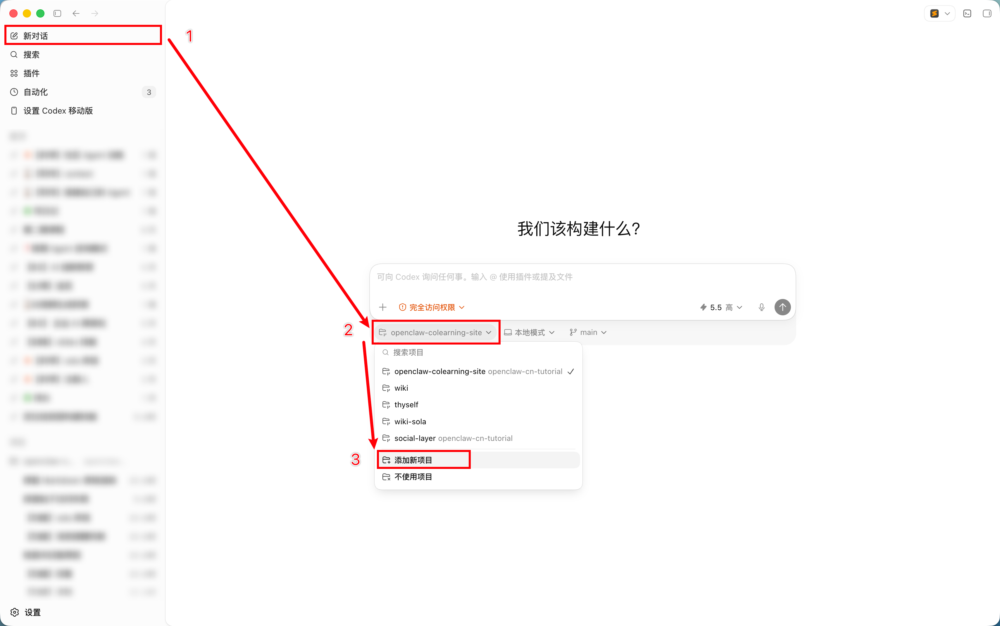
Claude
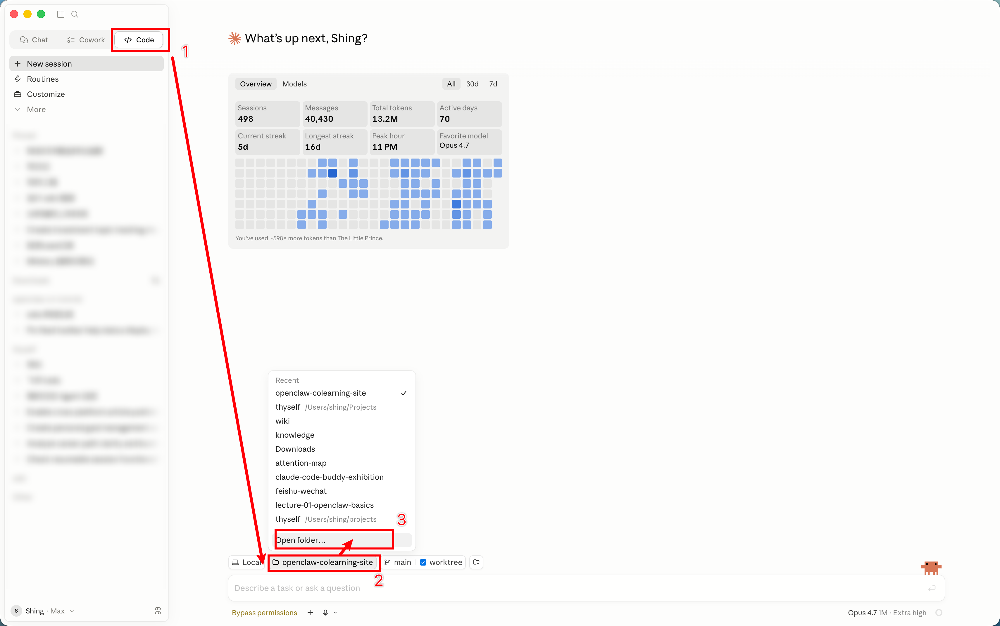
Trae
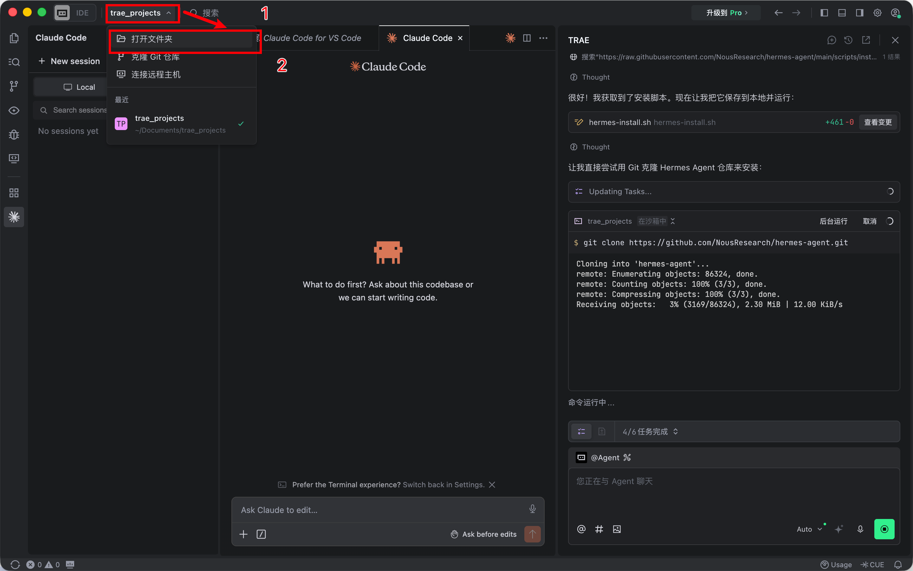
-
27
让 Agent 执行
bash请阅读当前文件夹里的所有文件，了解我这周的新媒体运营情况，参考上周周报的格式，帮我生成本周运营周报（5/12-5/18）。回应老板提出的所有问题，分析爆款视频，给出下周建议。 -
28
模拟输出结果对比